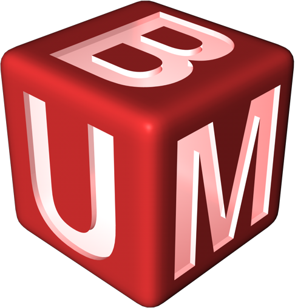
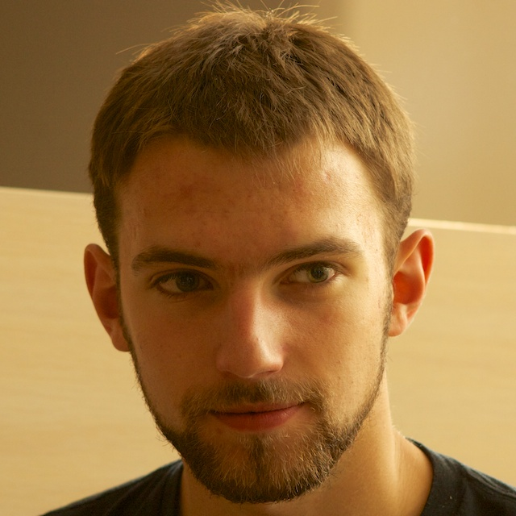
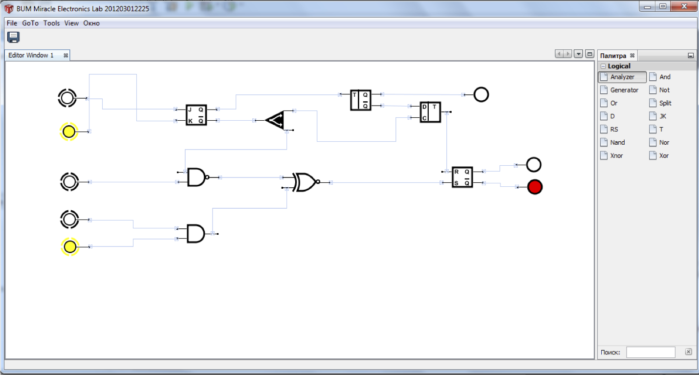
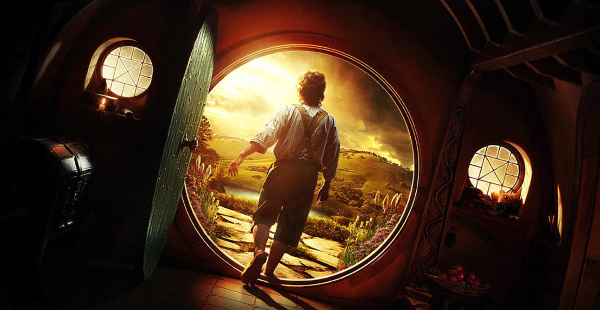

Курсовий проект, переосмислений з самого початку
 Все почалось з великого бажання програмувати, досліджувати, творити. Не бути обмеженими завданнями з математики та чисельних методів, вибором мови програмування та фреймворків. Одного дня Роман Євстахович запропонував створити альтернативу для симулятора електросхем EWB. Ми одразу ж погодились. Спочатку нас було троє, наступного року — п'ятеро, ще через рік — п'ять з половиною :). Ми дуже дуже багато робили помилок, але й дуже багато вчились. Наш проект був полігоном для випробування найновіших технологій, інстументів та методик. Минуло три роки ми зробили цікавий продукт. З'явилося чіткіше бачення картини. Проект знаходиться на порозі великих змін, і йому потрібна гаряча кров та світлий розум, щоб продовжити рухатись вперед!
 Мене звати Юрій Тимчук, хоча я часто користуюсь своїм псевдонімом Uko. Я відігравав основну роль в керуванні проектом впродовж всього часу його розвитку. В мене більше п'яти років стажу роботи в сфері інформаційних технологій, з них два останні стосуються власне програмування. Минулого навчального року я виконував свою магістерську роботу у співпраці з науковою командою RMoD. Потім вони запросили мене на стажування, де я навчився багато нового, і зустрів безліч цікавих людей. Також я побував у трьох країнах, чотирьох містах, на двох конференціях. Скоро я поїду на наукову роботу в університет USI міта Луґано (Швейцарія), з метою отримати ступінь доктора. Але я хочу, щоб цікаві студенти могли досягти того, на що заслуговують, тому я буду далі розвивати цей проект.
Три роки назад перед проектом BUMMEL стояла проста ціль: зробити щось круте. Ми хотіли зробити продукт, який працює на усіх платформах, дозволяє інтеграцію зовнішніх модулів, легкий в користуванні, і гарно виглядає. Ми робили хто що хотів, правда, потім зрозуміли, що треба організовуватись. Піднімали свої сервери, випробобували різні фреймворки, системи та методології. BUMMEL був місцем для спроб і поразок, спроб і перемог. З самого початку не було відомо що і як ми маємо робити, це прийшло згодом.
Ми, напевно, поламали більше ніж збудували. Нічого не вдієш - такий творчий процес. Ми зробили більше за 250 комітів. Ми додали/видалили більше за 50000 рядків. А врешті-решт у нас є працюючий продукт.  Результат вийшов не таким класним, як плани та очікування… В чому ж була проблема? Перед тим, як робити висновки, варто оцінити, що є зараз.
В нас були три головні проблеми: дураки, дороги та Росія (жартую)
Є багато програм, які дозволяють будувати електричні та логічні схеми. Але ми можемо побудувати інтрумент для навчання. Свого часу хтось почав розвивати таку ідею на базі геометрії, і тепер є чудове середовище Dr. Geo. Це середовище реалізоване на Pharo - мові програмування, у якої корені ростуть із Smalltalk. Це та ж мова програмування, на якій я писав магістерський проект. Та сама мова програмування, яку розвиває команда RMoD. Довкла Pharo свормувалась направду дивовижна спільнота. Ти їм кажеш, що зробив щось - вони кажуть: „Вау!“. Ти робиш більше - вони запрошують на стажування. Підчас стажування зустрічаєш професора, а він запрошує до себе на PhD. Можливо варто співпрацювати зними? З людьми, які льблять те, що ти робиш і помагають зробити це ще кращим.
Зараз алгоритми обчислення стану схеми частково викристовують примітивні типи даних (цілі та дійсні числа). У Pharo все є об'єктом. Замість цифер, між елементами може переміщатись логічний "так" або ж взагалі заряд. Це допоможе нам абстрагувати наш алгоритм, а також має посприяти розумінню роботи всієї системи.
Pharo є графічним інтерфейсом :). Pharo має бібліотеки для побудови графів, для анімацій, для векторної графіки. Але це все треба зібрати в інструмент, який буде працювати саме для нашого випадку. Хто знає, може цей внесок інтегрують в основні бібліотеки Pharo.
Мене не цікавить чи людина відмінник. Мене не цікавить чи людина вміє запам'ятовувати 100 формул для розв'язання нікому не потрібного прикладу. Я хочу зустріти когось, хто хоче знати більше. Хто хоче зробити більше. Людину, яка любить програмувати, любить творити і досліджувати. Життя - важка штука, але успіх - незабутнє враження.
Свою підтримку, коли вам це буде потрібно. А також незабутню пригоду, після якої ви більше не будете такими як зараз. 